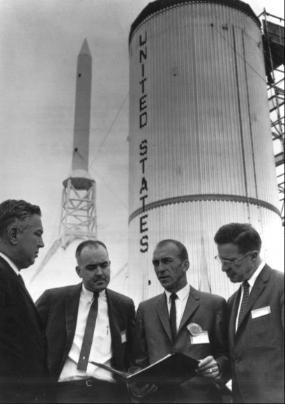

Harrison A. Storms, Jr. (widely known as "Stormy"), Vice President of North American and President of its Space and Information Systems Division, was a forceful leader in advanced design and development work and a vigorous decision-maker who got things done. He had studied aeronautical engineering under Theodore von Kármán at the California Institute of Technology during the 1940s. Subsequently, at North American, he had advanced steadily through the ranks. With the nationally famous test pilot A. Scott Crossfield, among others, Storms had shepherded the company team through the first phases of the X-15 and later the XB-70 aircraft programs.2
John Paup, who had worked at North American for several years before joining Sperry Rand, returned to his former employer in mid-1961 to help Storms bid on the NASA proposals and to become general manager for Apollo.3 Paup, in turn, picked Norman J. Ryker, Jr., as his chief designer. Ryker, who had joined the company in 1951, had been a stress analyst on the pioneer Navajo missile. He had also helped prepare bids for contracts for the Ranger and Surveyor spacecraft. North American had lost these competitions, but Ryker had remained in advanced design work.4
Charles H. Feltz, a company man since 1940, was a fourth major leader of North American's Apollo development team. He had worked on P-51 and B-25 aircraft during the Second World War and later on the B-45, the F-86, and the F-100. Feltz had been project leader on the X-15 rocket research aircraft, coming into close contact with NACA and then NASA leaders with whom he would work on Apollo. Feltz was considered by his peers to be one of the best manufacturing managers in the airframe business.5
A team and a goal: officials of North American Aviation, Inc., study a replica of the moon shortly after the announcement that NASA had selected NAA as prime contractor for the Apollo command and service modules. From left to right are Harrison A. Storms, president of North American's Space and Information Systems Division; John W. Paup, program manager for Apollo; and Charles H. Feltz, Apollo program engineer.
In the days before Project Mercury, North American, with General Electric, had been under contract to the Air Force for "Man-in-Space-Soonest." When the Air Force lost the manned space flight mission to NASA, North American had put in a bid for Mercury. After losing to the McDonnell Aircraft Corporation in 1959, North American officials in 1961 were not eager to chance another defeat in a major NASA competition. But Storms and Paup, after combining forces with Ryker and Feltz, were determined to try for Apollo. When NASA picked North American on 11 September 1961 to build the S-II second stage of the advanced Saturn, J. Leland Atwood, President of the corporation, and Samuel K. Hoffman, President of the firm's Rocketdyne Division, were reconciled to this role in the program. Storms, Paup, and Ryker were not; they pressed on to win the spacecraft contract as well.6
The North American Aviation plant at Downey, California, developed and produced the Apollo command module.
Storms' team operated from a two-story building in Downey, California. Design engineers and draftsmen occupied the major portion of the structure, their desks crowded together in cavernous halls. An adjacent building housed the manufacturing activities for the space division. Ninety percent of the property belonged to the federal government, but long-term leases had made North American, as tenant, virtually the proprietor. Now, with the Apollo contract, plans were made to recruit personnel, to buy adjoining property, and to construct more buildings and facilities. In the meantime, some of the personnel worked out of house-trailer offices in the parking lots.
The manpower buildup in Storms' division in the first six months of 1962 doubled the size of his organization - from 7,000 to more than 14,000 persons. Although many employees were busy on the Air Force's Hound Dog missile, among other projects, the newcomers for the most part were hired to develop the Apollo command and service modules.7
The impact facility at North American was used to drop-test the CM on water, sand, gravel, and boulders to check structural integrity and impact loads.
One of the first structures built at Downey specifically for Apollo began to take shape early in 1962. The Impact Test Facility, 46 meters high, looked like a gigantic playground swing. It was a swing of sorts - one designed to hold and drop a command module so the Apollo team could study it and improve structural strengths of the heatshield, honeycomb shock absorbers, inner and outer shells, afterbody, and astronaut couches. At one end of the swing was a pool of water, at the other a sandpile that could be banked or pitted with gravel and boulders. To return men safely from the moon required a knowledge of the exact limits they and their machine could endure at the final landing on earth.8
As expected, structures, heatshields, and radiation protection were primary concerns during the first year or so. Unexpectedly, however, the manufacture of mockup modules, initially considered of less importance, quickly grew into a major program to supply boilerplate spacecraft (metal models designed to be used in testing). North American's structural assembly department had begun tooling up for extensive work on mockups in January 1962. By the end of the year, this shop employed 305 persons on three shifts, tooling, drilling, welding, and assembling custom-built units. D. W. Chidley, a 14-year veteran of North American's prototype manufacturing and head of the department, reported at year's end that his group had built six test vehicles and two full-scale mockups, which had been featured in NASA-North American reviews during the year.9
To keep key personnel ready for the frequent meetings with NASA and aware of daily plant operations, Storms, Paup, Ryker, and Feltz held ten-minute briefings for all plant supervisors at the beginning of each morning shift. Agendas were carefully controlled; no interruptions were permitted; and everyone was required to speak for his section. Thus, until North American's Apollo operation grew too large to make this kind of communication useful, all the major managers had at least one daily direct contact with their colleagues and superiors. Some of these sessions were devoted to plans for selecting and working with the subcontractors who would develop the subsystems.10
Shortly after the NASA-North American contract was signed, subcontractors for four of the spacecraft systems were picked: (1) Collins Radio Company for telecommunications; (2) The Garrett Corporation's AiResearch Manufacturing Company, environmental control; (3) Minneapolis-Honeywell Regulator Company, stabilization and attitude control; and (4) Northrop Corporation's Radioplane (later Ventura Division), parachutes and earth landing.
North American soon added other subcontractors. In February 1962 the Lockheed Propulsion Company was selected to design the solid-propellant motor for the launch escape tower. By the end of March, The Marquardt Corporation had been chosen for the command and service modules' reaction control system, Aerojet-General for the service module's main engine, and Avco Corporation for ablative coatings and the spacecraft heatshield. In April, Thiokol Chemical Corporation was named to work with Lockheed on the launch escape system.11
Interior of a partial full-scale mockup of the Apollo command module. In flight, the center couch would be removed (as shown), giving better access to the instrument panel and lower equipment bay.
While NASA was trying to decide on the mode during the first half of 1962, John Paup and his North American engineers were getting restive. Although repeatedly warned by his own people not to bend tin or cut metal too soon, Paup insisted that hardware production should get under way. He did have his model shops turn out a mockup of a lunar excursion module - which looked like a helicopter cab atop thin spidery legs - and of a lunar braking module, just in case a direct route to the moon should be chosen. On the first of June, Paup wrote Houston that schedules for spacecraft delivery were slipping further and further behind. How could they build the service module, he asked, if they did not know what it would be used for?12
At left, left to right, astronauts Scott Carpenter, John Glenn, and Walter Schirra in 1963 inspect a full-scale mock up of the Apollo CM, designed for three men.
But there was at least one area where work could start immediately. Early in the contract, North American and Houston engineers had agreed on a flight-test program, putting boilerplate command and service modules through structural tests and checking out the abort escape system. In mid-1961, while he was still with NASA before joining North American in 1962, Alan Kehlet had suggested using a fin-stabilized, clustered-rocket, solid-propellant booster for these tests. The "Little Joe II" (named after the Project Mercury test vehicle) would be able to propel a full-sized Apollo reentry spacecraft to velocities as great as those in the critical portions of the Saturn trajectory and to altitudes of 60,900 meters. The tests would be a simple and fairly inexpensive way of determining - in flight - the full-scale spacecraft configuration concepts, systems performance, and structural integrity. Tests of the launch escape system at maximum dynamic pressure would be most important. In May 1962 the Convair Division of General Dynamics was selected to develop the vehicle.13

General Dynamics' Little Joe II program manager Jack Hurt (holding book) discusses development and production plans with NASA officials (left to right) Walter Williams, Robert Piland, and James Elms at the San Diego plant in May 1963.
Although launch sites at Wallops Island, Virginia; Eglin Air Force Base, Florida; and the Cape were considered, the New Mexico desert north of El Paso, Texas, was picked early in the spring of 1962 as the Little Joe II test area. The Army's White Sands Missile Range (WSMR) seemed the most suitable for Little Joe II ballistic flights.14
Selection of Little Joe II completed the Apollo family of launch vehicles.
A desert area at White Sands Test Facility, New Mexico, was used for testing the spacecraft propulsion system module.
A pad abort test at White Sands, left, helped determine that the launch escape system could propel the Apollo command module away from danger if a Saturn launch vehicle explosion should threaten.
A model of the CM, below, launched by a Little Joe II in 1965, is recovered after impact on the New Mexico desert.
NASA engineers expected to conduct three kinds of tests at White Sands: (1) pad aborts, in which a solid-fueled rocket mounted on a tower attached to the top of the command module would pull the spacecraft away as it would have to do if the Saturn threatened to blow up on the launch pad; (2) maximum-dynamic-pressure ("max q") tests, in which the rocket would pull the spacecraft away from the launch vehicle if the booster veered off course shortly after launch; and (3) high-altitude tests, in which the rocket would haul the spacecraft away from the launch vehicle if the Saturn were unable to boost its payload to orbital flight.15
Other organizations, such as the Ames Research Center, near San Francisco, had been working on Apollo while waiting for a mode decision. Quite often after a day's work at Downey, North American engineers flew to Moffett Field, carrying models for Ames to test in its wind tunnels. Ames engineers were also dropping test vehicles on a simulated lunar surface to study landing gear designs and possible structural damage on impact.16
Ames had a close relationship with its Navy neighbors at Moffett Field. Navy flight surgeon Harald A. Smedal, who had been in aviation medicine for years, was a logical consultant to NASA's research engineers. Interested in physiological instrumentation as well as pilot performance during flight, Smedal worked on spacecraft cabin designs, especially on cockpit layouts that emphasized pilot convenience in spacecraft control.17
Another example of Ames' applied research that fed into North American was the work of test pilots and life scientists in ground-based simulations of the characteristics of spacesuits, restraint harnesses, work-rest cycles, and isolation conditions. North American and Ames were intent on making certain that the cockpit was designed to take full advantage of the pilots' capabilities in performing and sharing their duties.18
The drawing outlines major parts of the command module structure.
The Lewis Research Center in Cleveland, Ohio, also took a hand in getting spacecraft development on a good footing by putting Marquardt's reaction control jets through a test program. These small motors - used to turn the spacecraft right or left, up or down, or in a roll maneuver - were cooled regeneratively (in a process in which the expansion of part of the hot gas cools the remainder). When tests showed that the engines would burn up during reentry heating, Houston directed North American to use Marquardt motors only on the service module (since it would be jettisoned before reentry) and to make or buy command module jets similar to the ablative engines developed for Gemini. In August 1962, the command module thruster contract was transferred to North American's Rocketdyne Division, which produced Gemini's attitude control and maneuvering engines and reentry control system.19
The cabin section (or primary structure) of the CM is assembled at North American in 1965.
Even though the Manned Spacecraft Center had gained its independence and had moved away, the ties between NASA-Langley and NASA-Houston remained strong, providing another source to draw on for help. Shortly after the move to Houston, Axel T. Mattson came to Texas as full-time liaison officer, coordinating the use of Langley's five-meter transonic wind tunnel in testing and studying the aerodynamic effects of reaction control jets and escape tower exhaust plumes on the command and service modules.
Technicians prepare aft heatshields to attach to model CMs. These shields were made of fiberglass for test vehicles that did not require heat protection; the finished versions were of the same materials as the central heatshield.
Langley's wind-tunnel experts also conducted diagnostic tests of heat transfer, heating loads and rates, and aerodynamic and hydrodynamic stability on the command module heatshield. The heatshield contractor - the Avco Corporation's Everett, Massachusetts, division - had proposed an ablative tile shield, a layered and bonded single-piece construction similar to that used on Mercury. Then McDonnell had advanced heat protection technology by developing ablator-filled honeycomb material for Gemini. When North American and NASA engineers approved this thermal protection Avco refined the new system to withstand the higher heating rates of lunar reentry. McDonnell's Gemini heatshield was made of a Fiberglas honeycomb material; the ablator, developed by Dow-Corning, was poured into it and allowed to harden. The Apollo ablative heatshield, however, was bonded to an inner brazed stainless steel honeycomb shield, and the 400,000 honeycomb cells in its plastic outer shield were filled by hand using a caulking gun,20 with an ablator developed by Avco.
Technicians work on the central heatshield, the two men on the sides applying heat-protection ablative material with caulking guns.
A completed central heatshield is lowered into place over the primary structure in May 1966.
While the heatshield was going through its growing pains, the earth landing system for the command module was beginning to mature. Apollo's preliminary plan had included either water or land landing. John W. Kiker, a landing system specialist in Houston, had studied several alternatives: a rotating wing (like a helicopter's), a flexible wing (similar to a paraglider), or traditional parachutes (such as were used in Mercury). Kiker, working with experts at Langley and Ames, ran the proposed models through wind-tunnel tests and then asked the Flight Research Center to put the equipment through free-flight tests at Edwards Air Force Base.21
Parachute recovery system.
But by the middle of 1962 hopes for a touchdown on land were beginning to fade. At a meeting in Houston on 10 May engineers of Northrop-Ventura (the recovery system subcontractor) described their designs for a cluster of three ring-sail parachutes for the main landing system. North American liked Northrop's proposal better than the system being tested, which deployed the parachutes through the heatshield cover on the conical top of the command module. In the proposed system, the cover would be jettisoned before the parachutes were released. On 16 May Houston told North American to go ahead with the development of this multiple-parachute system and to set the paraglider aside for further review.22
At that time, North American was developing a paraglider landing system for the Gemini spacecraft. In Houston, Max Faget noted that the contractor was having trouble with the Gemini system and became skeptical of the paraglider's value for Apollo. In June 1962, he recommended water landings for the lunar program. At NASA Headquarters, George Low told Brainerd Holmes that North American's concentration on parachutes for Apollo would mean the end of the paraglider for that program. Holmes wanted to know if it could be put in later, provided the technical difficulties were solved. Low said this could be done only if the paraglider were ready within a year.23 When NASA and the Navy recovered John Glenn and Scott Carpenter and their Mercury spacecraft from the water with comparative ease, chances for a dry landing in Apollo grew slim.
Another key part of the command module that had to keep moving was the guidance and navigation system. To get started in the right direction, representatives from North American and MIT decided to meet regularly, either at Downey or Cambridge, to keep an eye on progress and trade information. In early 1962, the guidance and navigation system had, of course, moved very little beyond the embryo stage. Some advances had been made on the gyroscopes and accelerometers for the inertial measurement unit (similar to that used to help guide the Polaris missile), but digital computer development and the space sextant were not well defined.24
Manned Spacecraft Center engineers had questioned whether an astronaut in a pressurized suit could operate a sextant or the other delicate pieces of navigation equipment. The Apollo contract had specified a shirt-sleeve environment. For this reason, North American had been told not to include in its design a hatch that opened by explosives, like Mercury's. An accidentally blown hatch would cause an instant vacuum and certain death for a crewman not wearing his pressure suit. But on some occasions, such as launch, the crew would be in their suits and would need equipment that could be operated while wearing the bulky gloves and helmet.25
In June 1962, several Manned Spacecraft Center and North American engineers went to MIT to learn how the crew was to operate the guidance system. One of the talks covered the use of the sextant in determining navigational position. At that point, the MIT experts were invited to Houston to try operating the sextant while wearing an inflated suit. Whether they came was not documented, but in the succeeding months modifications made the sextant and suit operation more compatible. The chief result of all these meetings, however, was a new understanding of the command module's cabin layout, which gave MIT a clearer picture of how components should fit.26
Ames Research Center engineers also participated in the meetings (giving Gilruth another set of specialists to call upon in monitoring MIT's work). The Ames guidance experts sponsored a session at a NASA-university conference that dealt with such subjects as midcourse guidance and navigation techniques and the procedures for reducing the uncertainties connected with these operations. Ames speakers recommended making mid-course corrections early in flight to avoid the wider dispersions and greater fuel use that might result from making trajectory changes closer to the moon. Studies by Ames on atmospheric entry guidance - another critical operation - indicated that a man could indeed steer his spacecraft through the narrow reentry corridor to a safe landing on the earth.27
When some components of the command module's guidance and navigation system were ready for development and fabrication by subcontractors, NASA Associate Administrator Robert Seamans appointed a Source Evaluation Board in January 1962, headed by Robert G. Chilton,* of MSC, to select industrial supporters for MIT. NASA chose the AC Spark Plug Division of General Motors to build the inertial platform, Raytheon to make the digital computer, and the Kollsman Instrument Corporation to manufacture the optical systems. By May 1962, most of these contractual arrangements were complete.28
NASA's top officials had been concerned about MIT's ability to build a guidance and navigation system that would take a crew to the moon and back to the earth. As the system began to take shape, another worry cropped up. Would the Instrumentation Laboratory be able to manage the industrial contractors once the design evolved into development? To be certain that the subcontractors understood the arrangement, Seamans visited the Wakefield Laboratory of AC Spark Plug in July, where he was assured that AC and MIT could work together just as they had on the Titan II inertial guidance system. But the managerial task in the complex and interlocking systems of the command module, as well as those of the other vehicles in the Apollo stack, had to be spelled out in precise and formal guidelines to ensure orderly progress. A system of "Interface Control Documents" became standard.
There was nothing very mysterious about the Interface Control Documents. Somewhere along the line, some piece of Apollo's two million functional parts assembled in one place had to meet and match with a piece put together in another place. After MIT had designed and supervised the building of the guidance and navigation system, for example, the component was sent to North American for installation in the command module. Size and location of the equipment had to be defined and agreed upon in advance so it would fit properly. Because of the many, many companies working on the different parts of the Apollo stack, these interface documents were essential in laying out just where and how the parts would come together - systems with spacecraft, spacecraft with launch vehicles, launch vehicles and spacecraft with launch facilities, and all these systems and craft with the crew and with launch and mission control centers.29
All in all, during 1962 good progress had been made in getting command module development under way. Contractors were working together, and cooperation among the NASA field centers had improved. One of the underlying factors in this advancement had been the establishment of a formal Apollo spacecraft management office at the Manned Spacecraft Center.
In January 1962, when Charles Frick became manager of the new Apollo Spacecraft Project Office, he assumed responsibility "for the technical direction of North American Aviation and other industrial contractors assigned work on the Apollo Spacecraft Project." Frick arrived at Langley Field, Virginia, just in time to meet the 45 persons that his deputy, Robert Piland, had gathered into the new project office before they moved to Houston on 1 February. The new organization settled into the Rich Building, one of the center's 13 rented sites scattered around the Gulf Freeway.30 But, even before Frick's arrival and the establishment of the formal spacecraft office, the Apollo workers in Gilruth's center had taken on an expanded responsibility.
* Chilton's board members were Caldwell C. Johnson, Jr., Charles F. Bingman, Arthur E. Garrison, and Carl D. Sword of MSC; Richard C. Henry and Earl E. McGinty of NASA Headquarters; Merrill H. Mead of Ames; and two nonvoting participants, Ralph Ragan of MIT and James T. Koppenhaver of NASA Headquarters.
2. Harrison A. Storms, Jr., interviews, Downey, Calif., 6 June 1966, and El Segundo, Calif., 16 July 1970; Philip Geddes, "How NAA Won Apollo . . . 'management,'" Aerospace Management, 1962, no. 4, pp. 12-16; biographical sketch of Storms in Shirley Thomas, Men of Space: Profiles of Leaders in Space Research, Development. and Exploration 4 (Philadelphia: Chilton Co., 1962): 206-32. See also Art Seidenbaum, "Quarterback for the Moon Race," Saturday Evening Post, 5 May 1962, pp. 85-90.
3. John W. Paup, interview, Downey, 7 June 1966; Beirne Lay, Jr., Earthbound Astronauts: The Builders of Apollo-Saturn (Englewood Cliffs, N.J.: Prentice Hall, 1971), pp. 77-81.
4. North American, "Norman J. Ryker, Jr., Vice President, Research, Engineering and Test," news release, 26 March 1970; Ryker, interviews, Downey, 9 June 1966 and 20 July 1970.
5. North American, "Charles H. Feltz, Program Vice President, Space Shuttle Orbiter Program," news release, 8 July 1970.
6. J. Leland Atwood, interview, El Segundo, 16 July 1970; Samuel K. Hoffman, interview, Canoga Park, Calif., 17 July 1970.
7. Oakley, "Historical Summary," pp. 6, 7, 43-44.
8. North American, "Apollo Facts," [ca. August 1963]; North American, "Impact Test Facility," news release NS-16, 3 April 1963; Ryker, "Technical Status of the Apollo Command and Service Modules," North American SID 64-698, 3 April 1964, p. 19.
9. D. W. Chidley, "1962 Annual Report on Department 663, Apollo Mockup, Boilerplate Structural Assembly Department," North American, n.d.
10. Jack R. Hahn, interview, Canoga Park, 15 July 1970.
11. "Four Additional Companies Named to Work on Apollo," MSC Space News Roundup, 27 Dec. 1961; Earl Blount TWX to Lt. Col. John A. Powers, 12 Feb. 1962; Oakley, "Historical Summary," pp. 5-6; Sanford Falbaum, interview, Long Beach, Calif., 15 July 1970.
12. Paup to Charles W. Frick, 1 June 1962; R. L. Benner, interview, Downey, 7 June 1966.
13. Alan B. Kehlet et al., "A Preliminary Study of a Fin-stabilized Solid-Fuel Rocket Booster for Use with the Apollo Spacecraft," NASA Project Apollo working paper No. 1020, 7 June 1961; William W. Petynia, interview, Houston, 9 Dec. 1970; General Dynamics, Convair Div., "Little Joe II Test Launch Vehicle, NASA Apollo: Final Report," GDC-66-042, May 1966; NASA, "NASA Project Apollo Statement of Work, Test Launch Vehicle (Little Joe II)," 31 March 1962. For a discussion of the origins of the Little Joe vehicle for Mercury, see Loyd S. Swenson, Jr., James M. Grimwood, and Charles C. Alexander, This New Ocean: A History of Project Mercury, NASA SP-4201 (Washington, 1966), pp. 121-26.
14. Petynia to Mgr., ASPO, MSC, "Trip report to White Sands Missile Range on May 17 and 18, 1962, to discuss Little Joe II and pad abort flight configurations and tests," 21 May 1962; Holmes to Assoc. Admin., NASA, "Apollo Spacecraft Propulsion Development Facility Site," 13 June 1962, with enc., "Site Recommendation for Apollo Spacecraft Propulsion Development Facility," p. 5; Maj. Gen. John G. Shinkle to Robert R. Gilruth, 4 June 1962; James E. Webb to Robert S. McNamara, 10 Aug. 1962; Robert P. Young to Webb, "Selection for site to test Apollo service module," 4 June 1962; idem, note, 7 June 1962; "Agreement for Construction and Operation of an Apollo Spacecraft Propulsion Development Facility at the White Sands Missile Range," approved by Hugh L. Dryden for NASA and Paul R. Ignatius for the Army, 19 Dec. 1962.
15. J. Thomas Markley, "Apollo at White Sands," MSC Fact Sheet 97, 11 Sept. 1962.
16. Calvin H. Perrine to Apollo Spacecraft Project Officer, "Minutes of Meeting at Ames Research Center on Aerodynamics and Meteorite Impact Studies Applicable to Apollo," 5 April 1962; Harold Hornby, interview, Ames, 28 June 1971.
17. For a sampling of research by Harald A. Smedal, see Smedal, George R. Holden, and Joseph R. Smith, Jr., to Dir., Ames, "Ames Airborne Physiological Instrumentation Package," 11 April 1960; Smedal, Brent Y. Creer, and Rodney C. Wingrove, Physiological Effects of Acceleration Observed during a Centrifuge Study of Pilot Performance, NASA Technical Note (TN) D-345 (Langley Field, December 1960); Smedal, Holden, and Smith, Jr., A Flight Evaluation of an Airborne Physiological Instrumentation System, Including Preliminary Results under Conditions of Varying Accelerations, NASA TN D-351 (Langley Field, December 1960); Holden, Smith, Jr., and Smedal, "Physiological Instrumentation Systems for Monitoring Pilot Response to Stress at Zero and High G," Aerospace Medicine 33 (1962), no. 4: 420-27.
18. Hubert C. Vykukal, Richard P. Gallant, and Glen W. Stinnett, "An Interchangeable, Mobile Pilot-Restraint System, Designed for Use in High Sustained Acceleration Force Fields," Aerospace Medicine 33 (1962), no. 3: 279-85; Edwin P. Hartman, Adventures in Research: A History of Ames Research Center, 1940–1965, NASA SP-4302 (Washington, 1970), pp. 479-80.
19. A. B. Kehlet et al., "Notes on Project Apollo: January 1960–January 1962," 8 Jan. 1962, p. 12; Jesse F. Goree to Caldwell C. Johnson, "Command Module RCS Engines," 20 July 1962; Johnson TWX to E. E. Sack and George A. Lemke, "Command and Service Module Reaction Control System Engines," 31 July 1962; Holmes to Assoc. Admin., NASA, "Change in Subcontractors for Apollo Command Module Reaction Control Jets," 24 July 1962.
20. Axel T. Mattson to Charles J. Donlan, "Report on Activities (April 1–April 5, 1962) regarding Manned Spacecraft Projects," 5 April 1962; Clyde B. Bothmer, minutes of OMSF Staff Meeting, 29 June 1962; Falbaum interview; Robert L. Trimpi, interview, Langley, 21 June 1966; North American, "CSM Costs/Schedule/Technical Characteristics Study: Final Report," 2, SID71-35, 30 April 1971, p. II-24; McDonnell Aircraft Corp., External Relations Div., Gemini Press Reference Book: Gemini Spacecraft Number Three (St. Louis, 1965), p. 5; North American, Public Relations Dept., Apollo Spacecraft News Reference (Downey, Calif., rev. ed., 1969), p. 47; Johnson Space Center, "Apollo Program Summary," JSC-09423, April 1975, p. 4-19; NASA, "Project: Apollo 7," press kit, news release 68-168K, 27 Sept. 1968, p. 25.
21. Gilruth to NASA Hq., Attn.: Silverstein, "Preliminary project development plan for a controllable parachute-retrorocket landing system for Apollo spacecraft," 26 June 1961; Gilruth to Langley, Attn.: Office of Cooperative Projects, "Wind tunnel investigation of Apollo Parawing deployment problems," n.d. [ca. August 1961]; Jack C. Heberlig to Johnson, no subj., 28 Aug. 1961.
22. North American, "Earth Landing System, Parachute Subsystem, Proposed Revision," SID 62-482, 8 May 1962; summary of meeting with NAA/S&ID, Northrop-Ventura, and MSC on landing system-parachute subsystem, 10 May 1962; Johnson to North American, Attn.: Paup, "Earth Landing System - Apollo Spacecraft," 16 May 1962; Benner interview.
23. Barton C. Hacker and James M. Grimwood, On the Shoulders of Titans: A History of Project Gemini, NASA SP-4203 (Washington, 1977), pp. 31-296, passim; Johnson to North American, Attn.: Sack, "Implementation of recommended actions from Design Review Meeting, June 4 and 5, 1962," 15 June 1962, with enc., minutes of MSC-NAA Spacecraft Design Review Meeting No. 3; Bothmer, OMSF Staff Meeting, 29 June 1962.
24. Johnson TWX to North American, Attn.: Paup and Markley, 30 Jan. 1962; George P. Burrill III to Assoc. Dir., MSC, "Visit to Massachusetts Institute of Technology (MIT), December 19–29, 1961," 3 Jan. 1962.
25. Glenn F. Bailey, "Request for Proposal No. 302, Feasibility Study for Project Apollo" [13 Sept. 1960], with attchs. A and B and enc., "General Requirements for a Proposal for a Feasibility Study of an Advanced Manned Spacecraft"; Kehlet et al., "Notes on Project Apollo," p. 8; Johnson enc., minutes, Design Review Meeting No. 3; Thomas V. Chambers to Assoc. Dir., MSC, "Coordination Meetings with MIT personnel," 27 Nov. 1961; MSC, ASPO Management Report for 16–23 April 1964.
26. MSC, abstract of proceedings, Guidance and Control System Meeting No. 2, 7 June 1962; Robert D. Weatherbee engineering memo to MSC, Attn.: Charles C. Lutz, "Transmittal of NASA-MIT-Apollo Space Suit Assembly Contractor Meeting dated December 5, 1962, HSER 2585-5," 22 Jan. 1963, with enc., minutes of spacesuit navigation system optical interface meeting between NASA, Hamilton Standard, International Latex Corp., and MIT at Cambridge, Mass., 5 Dec. 1962; Project Apollo Quarterly Status Reports: no. 2, for period ending 31 Dec. 1962, p. 12, and no. 3, for period ending 31 March 1963, p. 29.
27. H. E. Van Ness to STG, Attn.: Robert G. Chilton, "Apollo Navigation and Guidance Meetings," 13 Oct. 1961; Proceedings of the NASA-University Conference on the Science and Technology of Space Exploration, Chicago, 1–3 Nov. 1962, NASA SP-11, 2 vols. (Washington, 1962), papers 27 through 32.
28. Robert C. Seamans, Jr., to MSC, Attn.: Gilruth, "Appointment of Evaluation Board," 31 Jan. 1962; Webb, "Statement Of the Administrator, [NASA], on Selection of Contractors for Apollo Spacecraft Navigation and Guidance System MIT Industrial Support," n.d.; NASA, "Contractors Selected for Negotiations - Apollo Guidance System," news release 62-112, 8 May 1962.
29. Seamans to Admin., NASA, "Trip report to Wakefield Laboratory of A. C. Spark Plug Co., July 16," 25 July 1962; Aaron Cohen, interview, Houston, 14 Jan, 1970.
30. MSC, "Establishment of the Apollo Spacecraft Project Office," Announcement 10, 15 Jan. 1962; "MSC Personality: C. W. Frick Heads Apollo Project," MSC Space News Roundup, 7 March 1962. For a description of the decentralized Manned Spacecraft Center when it first moved to Texas, see NASA-MSC booklet, "Manned Spacecraft Center, Houston, Texas: Interim Facilities," 1 Aug. 1962.